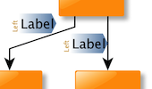
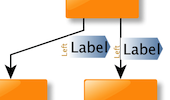
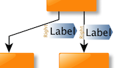
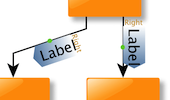

| Automatic Label Placement | ||
|---|---|---|
| Prev | Chapter 5. Automatic Graph Layout | Next |
Both types of graph elements, i.e., nodes and edges, can have one or more labels that can be used to show descriptive text for the element. The label's purpose is served best when it is both readable and also near its element, where readability most importantly results from the label being placed so that it does not overlap with other graph elements.
The yFiles library offers advanced labeling algorithms that automatically generate label arrangements that, whenever feasible, completely eliminate all overlaps, or minimize the number thereof otherwise. Labeling algorithms can be applied in two different scenarios: generic labeling and integrated labeling.
Generic labeling is independent of any layout algorithms and can be applied to any kind of diagram. It generates label placements without altering node positions, node sizes, or edge paths.
Integrated labeling, in contrast, is directly provided by some layout algorithms as an integrated part of the layout calculation. It allows to consider labels as part of the overall layout.
Integrated labeling's advantage is that, by design, it can prevent label overlaps completely. Generic labeling cannot always achieve this, since it has to deal with the existing node positions, node sizes, and edge paths. However, the graph's dimensions will remain constant or grow only minimally with generic labeling.
Additionally, generic labeling also supports placement of rotated labels, which covers both maintaining a preset rotation angle as well as finding edge label positions where the rotation is determined by the labeling algorithm, too.
In essence, labels are nothing more than boxes with given width and height that
should be placed in such a manner that conflicts with other graph elements or
labels are avoided.
Interface LabelLayout defines the basis
of all label implementations accordingly, see
Figure 5.118, “Basic interface for label implementations”.
defines the basis
of all label implementations accordingly, see
Figure 5.118, “Basic interface for label implementations”.
With the means provided by the yFiles Layout distribution, label boxes are
set up explicitly using NodeLabelLayout and EdgeLabelLayout implementations.
Example 5.49, “Creating label boxes” demonstrates the usage of class
EdgeLabelLayoutImpl to define label
boxes for an edge.
to define label
boxes for an edge.
Users of the yFiles Viewer distribution use the functionality provided by class
YLabel and its descendants to set up node
labels and edge labels.
and its descendants to set up node
labels and edge labels.
Example 5.49. Creating label boxes
// Set up two boxes that represent edge labels for an edge 'e'.
// Usually, the size of a label will be determined by calculating the bounding
// box of its text, which would also account for the text's font (size, etc.).
EdgeLabelLayoutImpl ell1 = new EdgeLabelLayoutImpl();
ell1.setBox(new YRectangle(0, 0, 80, 20));
EdgeLabelLayoutImpl ell2 = new EdgeLabelLayoutImpl();
ell2.setBox(new YRectangle(0, 0, 40, 20));
// Set up an oriented box that represents a rotated edge label (of 45 degrees
// counterclockwise).
EdgeLabelLayoutImpl ell3 = new EdgeLabelLayoutImpl();
OrientedRectangle or = new OrientedRectangle(0, 0, 80, 20);
or.setAngle(Math.PI / 4.0);
ell3.setOrientedBox(or);
// Associate the label boxes with the edge.
EdgeLabelLayout[] ells = new EdgeLabelLayout[]{ ell1, ell2, ell3 };
graph.setLabelLayout(e, ells);
Both node label and edge label have associated a so-called "label model," that defines a set of valid positions where the label can be placed relative to its respective graph element. In the context of automatic label placement, all valid positions are at the same time "candidates" among which a labeling algorithm can choose the best match to ultimately place the label.
In terms of minimization of overlaps, more candidates mean better prospects for the outcome of a generic labeling algorithm.
Table 5.87, “Predefined node label models” lists the available node label models, their class hierarchy is presented in Figure 5.119, “Predefined node label models”.
Table 5.87. Predefined node label models
| Class Name | Description |
|---|---|
| DiscreteNodeLabelModel |
Defines a maximum of eight positions outside the node's bounding box, and also a maximum of nine positions inside. |
| FreeNodeLabelModel |
Supports label placement outside the node at any given offset relative to its upper left corner. In effect, "free" defines a large number of nearly continuous label positions around a node. Note that this model supports rotated labels. When placing rotated labels, any preset rotation angle is maintained. |
Class SmartNodeLabelModel from package y.view is a node label model that provides support
for sophisticated "free" label positioning in an interactive scenario where a node
label is being moved.
is a node label model that provides support
for sophisticated "free" label positioning in an interactive scenario where a node
label is being moved.
For generic labeling around a node, FreeNodeLabelModel is a much better choice for a node label model than DiscreteNodeLabelModel. However, FreeNodeLabelModel allows for unspecified label positions only, while the positions of DiscreteNodeLabelModel are all predefined.
For automatic label placement, SmartNodeLabelModel is treated like a free label
model.
Generic labeling can use an alternate label model
for a label via the data provider key LABEL_MODEL_DPKEY .
.
Table 5.88, “Predefined edge label models” lists the available edge label models, their class hierarchy is presented in Figure 5.120, “Predefined edge label models”.
Table 5.88. Predefined edge label models
| Class Name | Description |
|---|---|
| DiscreteEdgeLabelModel |
Defines a maximum of six positions along the edge's path, and also a maximum of three positions directly on the edge. |
| FreeEdgeLabelModel |
Supports label placement at any given offset relative to the edge's intersection point with its source node. In effect, "free" defines a large number of nearly continuous label positions along the edge's path, in some distance to the edge's path, and also directly on it. Note that this model supports rotated labels. When placing rotated labels, any preset rotation angle is maintained. |
| SliderEdgeLabelModel |
Supports nearly continuous label positions along the edge's path as well as directly on it. |
| RotatedDiscreteEdgeLabelModel |
Similar to DiscreteEdgeLabelModel, but supports rotated labels. When placing rotated labels, any preset rotation angle can be maintained. Optionally, the rotation of the edge label can be determined by the labeling algorithm, too. |
| RotatedSliderEdgeLabelModel |
Similar to SliderEdgeLabelModel, but supports rotated labels. When placing rotated labels, any preset rotation angle can be maintained. Optionally, the rotation of the edge label can be determined by the labeling algorithm, too. |
Class SmartEdgeLabelModel from package y.view is an edge label model that provides support
for sophisticated "free" label positioning in an interactive scenario where an edge
label is being moved.
is an edge label model that provides support
for sophisticated "free" label positioning in an interactive scenario where an edge
label is being moved.
For generic labeling of edge labels that shall retain their preset rotation angle, FreeEdgeLabelModel with its large number of nearly continuous positions is the best choice as an edge label model, followed by RotatedSliderEdgeLabelModel and then RotatedDiscreteEdgeLabelModel. For generic labeling of edge labels that shall adjust to the slope of their corresponding edge segment, RotatedSliderEdgeLabelModel can generate more candidate positions than RotatedDiscreteEdgeLabelModel.
Integrated labeling favors FreeEdgeLabelModel, followed by SliderEdgeLabelModel, since it does not work with the candidates initially. Instead, it first computes an optimal location for the label, and then tries to find the best matching label position for that location in the given label model.
For automatic label placement, SmartEdgeLabelModel is treated like a free label
model.
Generic labeling can use an alternate label model
for a label via the data provider key LABEL_MODEL_DPKEY .
.
Associating an edge label with one of the predefined edge label models is shown in Example 5.50, “Setting edge label models”.
Example 5.50. Setting edge label models
// Set a side slider edge label model that can determine the rotation of edge // labels with respect to the slope of their respective edge segments. ell1.setEdgeLabelModel( new RotatedSliderEdgeLabelModel(RotatedSliderEdgeLabelModel.SIDE_SLIDER)); // Set center slider edge label model, where the label is placed directly on // the edge's path. ell2.setEdgeLabelModel( new SliderEdgeLabelModel(SliderEdgeLabelModel.CENTER_SLIDER)); // Set side slider edge label model, where the label is placed along the edge's // path. ell3.setEdgeLabelModel( new SliderEdgeLabelModel(SliderEdgeLabelModel.SIDE_SLIDER));
Class PreferredPlacementDescriptor can be
used to configure preferred placement options and preferred rotation behavior for
edge labels.
When calculating edge label positions, the specified settings will be adhered to
as good as possible by both the generic labeling algorithms as well as the layout
algorithms that support integrated labeling.
can be
used to configure preferred placement options and preferred rotation behavior for
edge labels.
When calculating edge label positions, the specified settings will be adhered to
as good as possible by both the generic labeling algorithms as well as the layout
algorithms that support integrated labeling.
Preferred placement options include, for example, whether an edge label shall be positioned
Preferred rotation behavior includes, for example, whether
The edge label configurations supported by class PreferredPlacementDescriptor only
make sense when the edge label is associated with a label model that supports label
rotation and that does not restrict edge label placement to discrete positions.
In particular, this applies to the "free" label model FreeEdgeLabelModel (and SmartEdgeLabelModel
(and SmartEdgeLabelModel from yFiles Viewer),
but also to label model RotatedSliderEdgeLabelModel
from yFiles Viewer),
but also to label model RotatedSliderEdgeLabelModel .
.
The following method defined in interface EdgeLabelLayout returns the PreferredPlacementDescriptor instance that is associated with an edge
label:
returns the PreferredPlacementDescriptor instance that is associated with an edge
label:
By default, the PreferredPlacementDescriptor instance that is associated with actual implementations of interface EdgeLabelLayout, like, e.g., instances of class EdgeLabelLayoutImpl or class y.view.EdgeLabel, is immutable. The immutability is a direct consequence of the descriptor instance being shared among newly created edge labels.
Every call to a setter method of such an immutable PreferredPlacementDescriptor instance will yield a java.lang.IllegalStateException.
To properly configure individual preferred placement options for an edge label, a dedicated descriptor instance needs to be associated with the label. The following code snippet shows how this can be achieved:
Example 5.51. Creating and associating a new PreferredPlacementDescriptor to configure individual preferred placement options for an edge label
// 'ell' is of type y.layout.EdgeLabelLayoutImpl.
// Create a copy of the edge label's current descriptor using the copy
// constructor of the class.
PreferredPlacementDescriptor prefPDesc =
new PreferredPlacementDescriptor(ell.getPreferredPlacementDescriptor());
// Now configure individual preferred placement options on the copy.
...
// Make it immutable (optional).
prefPDesc.freeze();
// Set the copy as the descriptor for the new edge label.
ell.setPreferredPlacementDescriptor(prefPDesc);
The methods of class PreferredPlacementDescriptor to configure preferred placement options are:
void setSideOfEdge(byte sideOfEdge) |
|
| Description | Preferred placement options. |
An edge label can be placed at the side of the path of its edge. The actual side can be specified both absolute and relative:
Figure 5.121. Absolute and relative edge label placement
|

|

|
| Absolute placement: left of the edge path when looking at the diagram. | Relative placement: left of the edge path when looking from source to target along the edge path. |
Note that the setSideReference(byte) method provides the means to resolve the special case when the edge label's side
is specified as an absolute placement and its corresponding edge segment happens
to be horizontal, i.e., when there is no actual left or right "side."
method provides the means to resolve the special case when the edge label's side
is specified as an absolute placement and its corresponding edge segment happens
to be horizontal, i.e., when there is no actual left or right "side."
The methods to configure preferred rotation behavior:
void setAngle(double angle) |
|
| Description | Preferred rotation behavior. |
The arrow-shaped gradient in the background of the label denotes the orientation of its box. Note that in the right figure below the text of the left label is flipped: according to its box's orientation, the text would actually be upside-down, but to be readable it is automatically rendered correctly.
Figure 5.122. Absolute and relative edge label rotation
|

|

|
| Absolute rotation: 0 degree when looking at the diagram. | Relative rotation: 0 degree added to the slope of the edge segment that is nearest to the edge label. |
In tutorial demo application PreferredLabelPlacementDemo.java the effects of the edge label configuration supported by class PreferredPlacementDescriptor can be tested in conjunction with both generic edge labeling and integrated edge labeling.
A generic labeling algorithm computes label positions for the labels from a
given graph so that they, ideally, do not overlap with each other or with graph
elements.
It does so without altering nodes or edges in any way.
Figure 5.123, “Class hierarchy for labeling algorithms” shows the class hierarchy of the generic
labeling algorithms that are provided in package
y.layout.labeling .
.
The set of labels that a generic labeling algorithm processes can be restricted to node labels only or to edge labels only:
void setPlaceNodeLabels(boolean enabled) |
|
| Description | Methods to restrict the set of labels. |
The available generic labeling algorithms can deal with label models that support rotated labels. They support placing rotated labels using edge label positions that retain a preset rotation angle as well as using edge label positions where the rotation is adjusted to the slope of a corresponding edge segment.
Optionally, they can also be configured to auto-flip edge labels to avoid that their text is upside-down:
void setAutoFlippingEnabled(boolean enabled) |
|
| Description | Configures auto-flipping for upside-down edge labels. |
The labeling algorithm uses the model that is associated with a label to get the available candidate positions. From this set of candidates it then chooses one that best matches the label position it has calculated. The label model's model parameter is then used to encode this position.
It is important to understand that the result of a labeling algorithm is one model parameter per processed label, which is directly stored with the label after calculation. This model parameter expresses the calculated label position with respect to the corresponding label model, and it is only valid in the context of this label model. To get the actual location of a label after the labeling algorithm has finished, both model parameter and corresponding label model are necessary.
Example 5.52, “Getting a label's position from its model parameter” shows how to use the corresponding label model to turn the information from a label's model parameter into a proper location for it.
Example 5.52. Getting a label's position from its model parameter
/*
* Returns the calculated location of the edge label.
* Note that the labeling machinery returns the edge label's position as a
* parameter of the model that belongs to the label. This model parameter can
* be used to retrieve the actual location of the label as shown in this
* method.
*/
OrientedRectangle getEdgeLabelLocation(LayoutGraph graph,
Edge e, EdgeLabelLayout ell) {
OrientedRectangle or = ell.getLabelModel().getLabelPlacement(
ell.getOrientedBox(),
graph.getEdgeLayout(e),
graph.getNodeLayout(e.source()),
graph.getNodeLayout(e.target()),
ell.getModelParameter());
return or;
}
The base class for all major layout algorithms, class
CanonicMultiStageLayouter , allows to
conveniently enable/disable generic labeling for each layout run.
The labeling algorithm is then invoked after the actual layout algorithm has
finished.
Additionally, the labeling algorithm itself can also be set.
Class CanonicMultiStageLayouter provides the following labeling-related methods:
, allows to
conveniently enable/disable generic labeling for each layout run.
The labeling algorithm is then invoked after the actual layout algorithm has
finished.
Additionally, the labeling algorithm itself can also be set.
Class CanonicMultiStageLayouter provides the following labeling-related methods:
boolean isLabelLayouterEnabled() |
|
| Description | Getter/setter for enabling/disabling generic as well as integrated labeling. |
LayoutStage getLabelLayouter() |
|
| Description | Getter/setter for the actual labeling algorithm to be used. |
Instead of a label's actual label model, the generic labeling algorithms can also use an alternate label model when calculating valid positions for it. This can be useful, if the original label model is a free model, but the set of valid positions should be temporarily restricted, for example, to guarantee that an edge label is placed onto its associated edge.
To specify the alternate label models, a data provider holding such supplemental
layout data must be bound to the graph.
The data provider is expected to be registered with the graph using key LABEL_MODEL_DPKEY .
.
The following code shows how a data provider that returns an alternate label model for edge labels can be registered with a graph:
Example 5.53. Using alternate edge label models for labeling
// 'graph' is of type y.base.Graph.
// Register the data provider that stores for each node label the label model
// that shall be used by the labeling algorithm.
graph.addDataProvider(AbstractLabelingAlgorithm.LABEL_MODEL_DPKEY,
new DataProviderAdapter() {
EdgeLabelModel elm =
new RotatedSliderEdgeLabelModel(RotatedSliderEdgeLabelModel.CENTER_SLIDER);
public Object get(Object dataHolder) {
if (dataHolder instanceof EdgeLabelLayout) {
EdgeLabelModel currELM = ((EdgeLabelLayout)dataHolder).getLabelModel();
if (currELM instanceof y.view.SmartEdgeLabelModel) {
return elm;
}
}
// Means that the label's actual label model is used.
return null;
}
});
The generic labeling algorithms know a number of data provider keys which are used to retrieve supplemental layout data for the labels in a graph. The data is bound to the graph by means of a data provider which is registered using a given look-up key. Table 5.89, “Data provider look-up keys” lists all look-up keys that a generic labeling algorithm tests during the layout process in order to query supplemental data.
Binding supplemental layout data to a graph is described in the section called “Providing Supplemental Layout Data”.
Table 5.89. Data provider look-up keys
| Key | Element Type | Value Type | Description |
|---|---|---|---|
| LABEL_MODEL_DPKEY |
NodeLabelLayout | NodeLabelModel | For each NodeLabelLayout instance a NodeLabelModel instance that is used to determine valid label positions. |
| EdgeLabelLayout | EdgeLabelModel | For each EdgeLabelLayout instance a EdgeLabelModel instance that is used to determine valid label positions. |
Integrated labeling denotes automatic edge label placement as an integrated part of a layout algorithm. All edge labels of a graph are arranged in such a manner that there are no overlaps of edge labels with each other or with graph elements.
Table 5.90, “Layout support for integrated labeling” lists the major layout algorithms that provide support for integrated labeling.
Table 5.90. Layout support for integrated labeling
| Layout Style | Classname | Note |
|---|---|---|
| Hierarchical | IncrementalHierarchicLayouter |
With class IncrementalHierarchicLayouter, integrated labeling can be conveniently enabled using appropriate configuration methods. See the description of the hierarchical layout style for more information. |
| Orthogonal | OrthogonalLayouter |
See the descriptions of orthogonal layout, directed orthogonal layout, and orthogonal layout of grouped graphs for more information. |
| Tree | TreeLayouter |
Integrated labeling can conveniently be enabled using appropriate configuration methods. See the descriptions of directed tree layout, generic tree layout, and balloon layout for more information. |
Integrated labeling relies on the services of class
LabelLayoutTranslator which converts
label layout information so that it is understood by a layout algorithm.
Example 5.54, “Using class LabelLayoutTranslator” shows how to configure integrated
labeling in the absence of an appropriate configuration method.
Layout algorithms that provide such a configuration method automatically ensure
proper use of LabelLayoutTranslator.
which converts
label layout information so that it is understood by a layout algorithm.
Example 5.54, “Using class LabelLayoutTranslator” shows how to configure integrated
labeling in the absence of an appropriate configuration method.
Layout algorithms that provide such a configuration method automatically ensure
proper use of LabelLayoutTranslator.
Example 5.54. Using class LabelLayoutTranslator
void useIntegratedLabeling(CanonicMultiStageLayouter layouter) {
// Use integrated labeling support, and let class LabelLayoutTranslator do
// the conversion of information held by an edge label's EdgeLabelLayout
// object to data provider-based information that is understood by the
// algorithm.
layouter.setLabelLayouter(new LabelLayoutTranslator());
layouter.setLabelLayouterEnabled(true);
}
Through the following method LabelLayoutTranslator supports configuration of edge label auto-flip behavior:
void setAutoFlippingEnabled(boolean enabled) |
|
| Description | Configures auto-flipping for upside-down edge labels. |
Tutorial demo application LayoutWithoutAView.java
shows the setup for running a labeling algorithm without the presence of the yFiles
library package y.view .
NodeLabelingDemo.java and EdgeLabelingDemo.java
show how to configure node labels/edge labels) and the corresponding node label
models/edge label models) as well as how to apply generic labeling.
.
NodeLabelingDemo.java and EdgeLabelingDemo.java
show how to configure node labels/edge labels) and the corresponding node label
models/edge label models) as well as how to apply generic labeling.
|
Copyright ©2004-2015, yWorks GmbH. All rights reserved. |